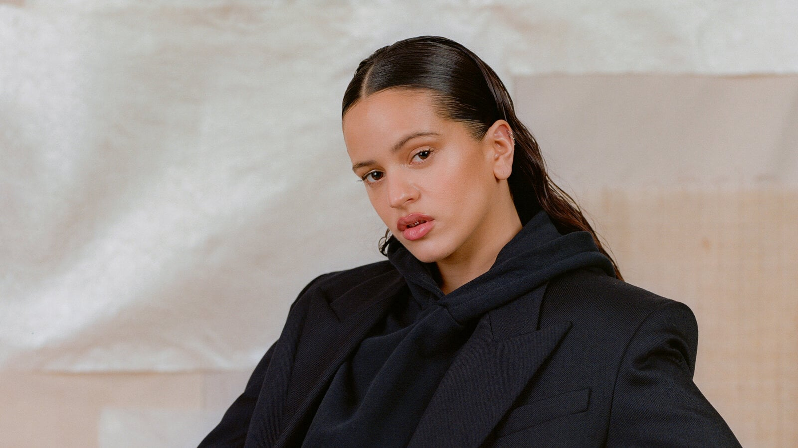

Rosalia
Born: 25 September 1992
Age:
Years Active: 2013–present
Genre/s: Flamenco pop, urbano, art pop, folk
Label/s: Columbia, Universal Spain
Rosalia Vila Tobella (born 25 September 1992), known mononymously as Rosalía (Spanish: [rosaˈli.a], Catalan: [ruzəˈli.ə]), is a Spanish singer and songwriter. She has been described as an "atypical pop star" due to her genre-bending musical style. After being enthralled by Spanish folk music at age 14, she studied musicology at the Catalonia College of Music and graduated in 2017.
She completed her studies with honours by virtue of her debut and collaborative cover album with Raül Refree, Los Ángeles (2017), and her baccalaureate second album El mal querer (2018). Reimagining flamenco by mixing it with pop and hip-hop music, it spawned the singles "Malamente" and "Pienso en tu mirá", which caught the attention of the Spanish public, and were released to critical acclaim. A recipient of the Latin Grammy Award for Album of the Year and listed in Rolling Stone's 500 Greatest Albums of All Time, El mal querer started the ascent of Rosalía into the international music scene. Rosalía explored urbano music with her 2019 releases "Con altura" and "Yo x ti, tú x mí", achieving global success. She gave reggaeton an experimental twist on her third studio album Motomami (2022), departing from the new flamenco sound of its predecessor. The album caught international attention with its singles "La Fama", "Saoko", and "Despechá", to become the best reviewed album of the year on Metacritic. Her fourth album Lux (2025) broke several all-time records by a Spanish-speaking female artist, and was acclaimed by critics for its fusion of art pop and classical elements.
In the course of her career, Rosalía has accumulated thirteen number-ones in her home country, the most for a local artist. She has also won two Grammy Awards, eleven Latin Grammy Awards (including two Album of the Year wins), a BRIT Award, four MTV Video Music Awards, two MTV Europe Music Awards, three UK Music Video Awards and two Premio Ruido awards, among others. In 2019, Billboard gave her the Rising Star Award for "changing the sound of today's mainstream music with her fresh flamenco-influenced pop", and became the first Spanish-singing act in history to be nominated for Best New Artist at the Grammys. She is widely considered one of the most successful and influential Spanish singers of all time.